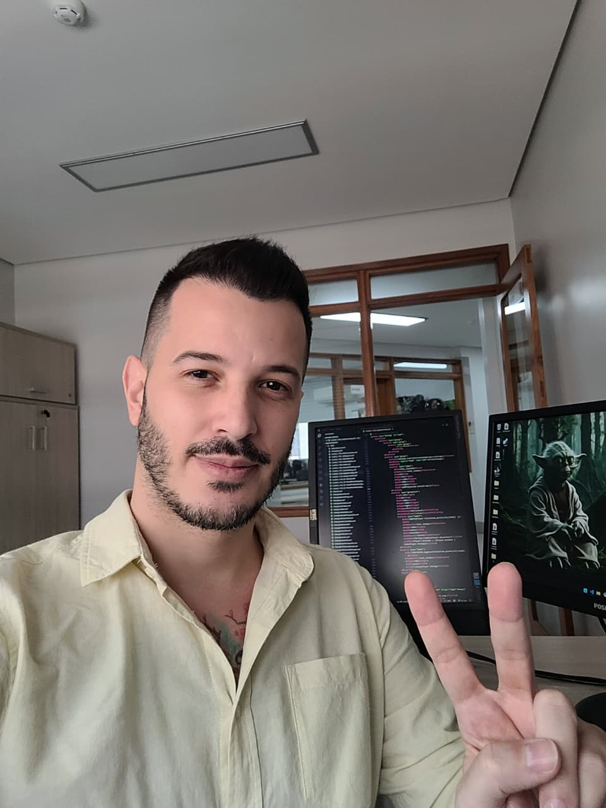
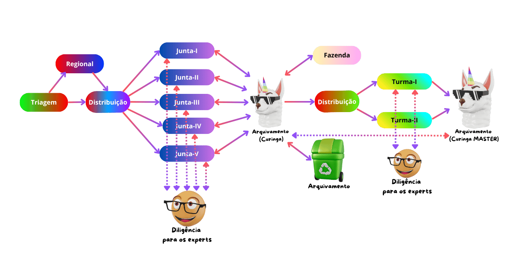
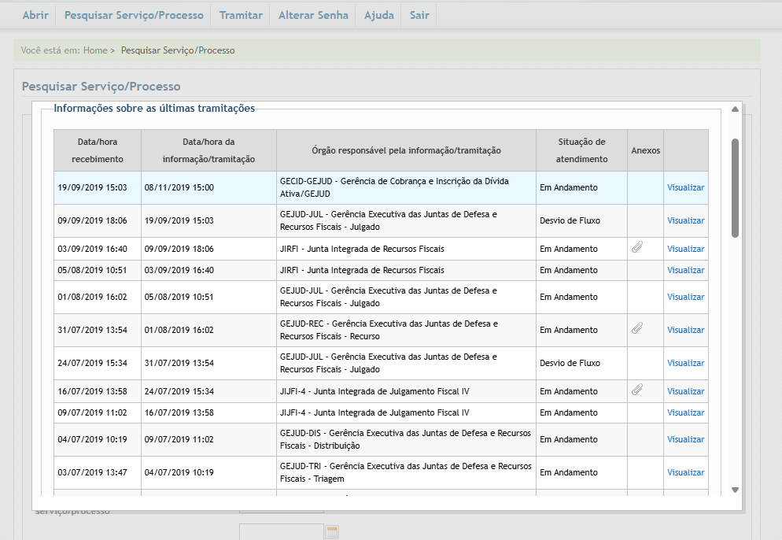
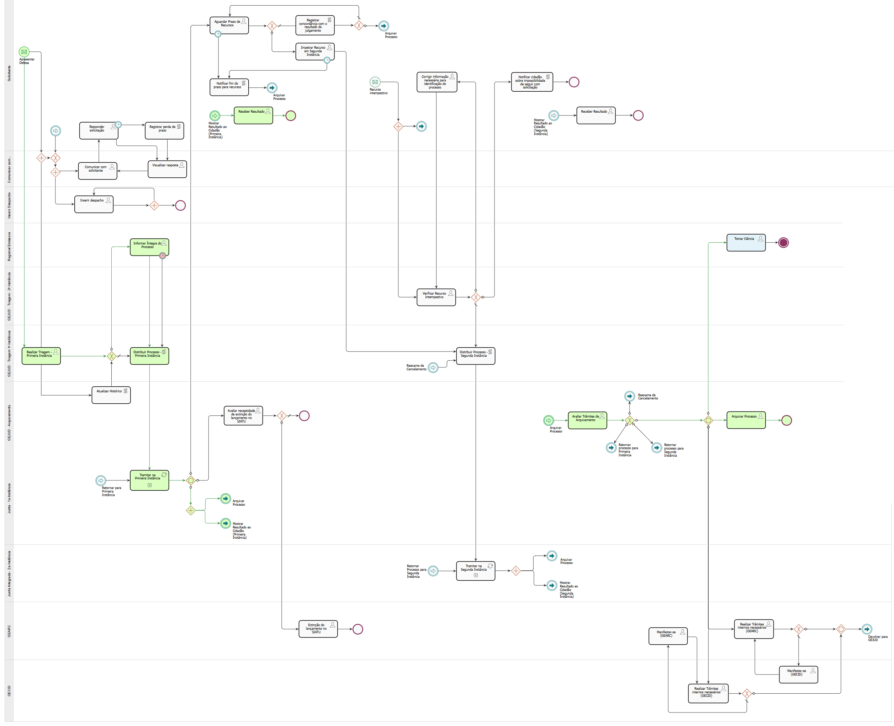

Meu currículo animado em 2 minutos
Sou Saulo Hugo Rossi, formado em Direito (UFMG), Análise em Desenvolvimento de Sistemas e Ciências da Computação (Newton Paiva).
Ops! Mentira, sou este! Informal e sempre animado!

Sempre curioso e apaixonado por TI:
Now, lets talk about big projects 😎
Em 2019, conduzi e participei ativamente do desenvolvimento de um sistema para a Prefeitura de Belo Horizonte, viabilizando a digitalização de processos até então tramitados em papel.
Foi então que percebi🤔💡 com minha sólida experiência jurídica, adquiri uma visão analítica de processos e a habilidade para desenvolver soluções de TI eficientes 🦸🏻♂️, passando a atuar também como analista de sistemas.
Simplificando: este é o fluxo do sistema onde julgamos mais de 20.000 processos.


Click on me 👆🏻!
Em 2022, conduzi uma equipe maior para a criação e implementação de um fluxo mais robusto, responsável por integrar os seguintes serviços à plataforma SYDLE ONE:
O processo que era digitalizado, virou digital.
O fluxo cresceu, ganhou subfluxo e ficou mais claro. Não se engane pelo tamanho, sou apaixonado pela simplificação, mas simplificar não significa reduzir!
Etapas foram automatizadas e timers foram criados. Isso reduziu minha equipe pela metade e o prazo médio de julgamento caiu de 90 para 30 dias.

A imagem "fluxao.png", com opção de zoom. Alguns trechos foram ocultados por questões de privacidade e ética profissional.
Projetos, tecnologia e soluções
Minha curiosidade vai além do código: gosto de otimizar sistemas, modificar hardware e criar automações no Android, Windows e Linux.
Sou movido pela curiosidade, pela lógica e pela vontade constante de aprender. Acredito que a tecnologia potencializa ideias, mas é a criatividade humana que transforma problemas em soluções.
Skills
Linguagens: Python, JavaScript, TypeScript, SQL, HTML5, CSS3
Backend: Flask, FastAPI, Node.js, Express, APIs REST, GraphQL
Frontend: React, HTML5, CSS3, interfaces responsivas
Bancos de Dados: MySQL, SQLite, Firebase/Firestore
DevOps e Ferramentas: Docker, Docker Compose, Git, GitHub, GitHub Actions, Grafana
Testes e Qualidade: pytest, TDD, versionamento de código
Metodologias: Scrum, Kanban
Experiências Profissionais
A5 Labs: Desenvolvedor Backend Python | 2025
PBH, Autônomo, Projetos Acadêmicos e Pessoais: Desenvolvedor Web Full-Stack | 2022–atual
Prefeitura de Belo Horizonte: Analista de Sistemas | Gerente Executivo | 2018–atual
GAMAA Advocacia Empresarial: Advogado Sênior | 2010-2016
Este sou eu!
Se vc chegou até aqui, pode abrir seu presente!